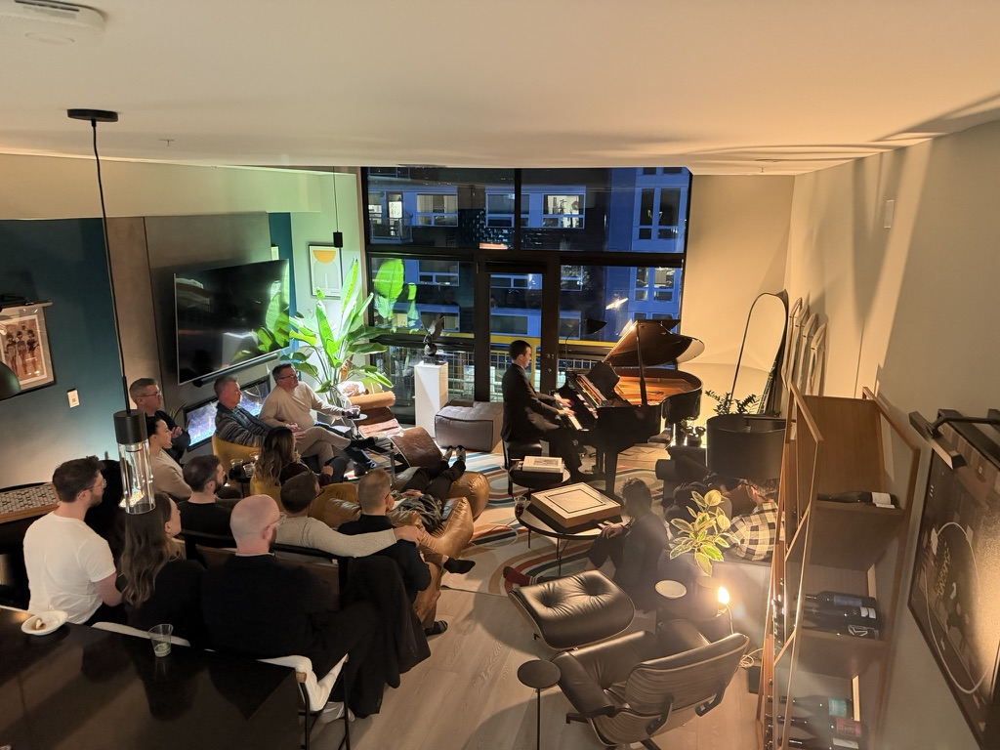
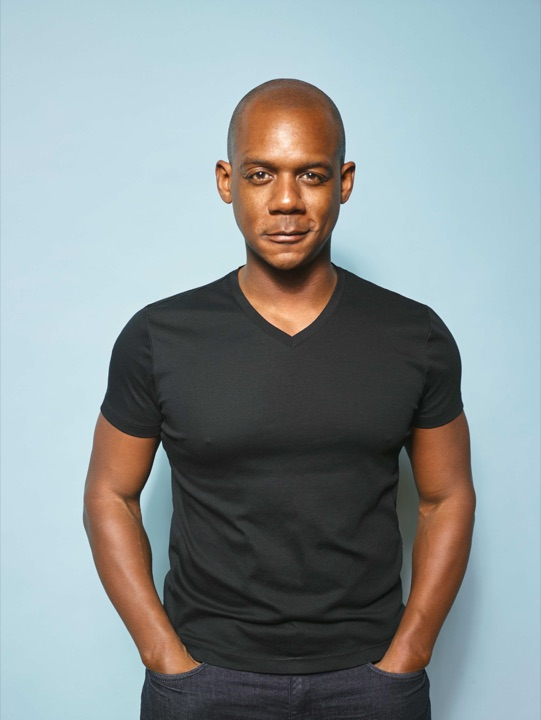

7 Hill Arts
About
7 Hill Arts holds space for healing through the arts. Founded by a Black queer organizer and rooted in Capitol Hill's enduring identity as a queer cultural home, we create intentional spaces where communities of color and queer people across identities can be fully present, fully expressed, and fully held in community.
Our programming spans scales and forms. Intimate living room concerts. Visual arts gatherings. Artist dialogues. Public block parties grounded in house music as a culture of liberation, born of Black and queer resistance. We believe the arts are a form of resistance and a form of repair. Joy, beauty, and gathering are not luxuries but necessities, particularly for those whose belonging has been contested.
Named for Seattle's seven hills, 7 Hill Arts is anchored on Capitol Hill, the queer heart of the city, with a vision of activating each of Seattle's hills over time. One block, one concert, one tea dance at a time.
Programming
Today
Living room concerts. Local artists in intimate performances for 25 to 30 guests around a Bergmann baby grand in a Capitol Hill loft.
Tomorrow
Creative gatherings and visiting artists expand as grant funding grows.
Creative gatherings. Figure drawing, painting, poetry, spoken word, and open mic nights across a multidisciplinary season.
Visiting artists. Regional and national touring musicians presented at accessible, sliding-scale prices.
In the future
Public block parties. Free street activations and public events throughout the Seattle area, grounded in house music as a culture of liberation.
Intimate. Intentional. Intersectional. Intergenerational.
About the Founder

David Daniels, founder of 7 Hill Arts, brings 22 years of nonprofit governance and leadership experience to the organization, including ArtsFund Board Leadership Training and nine years of board and volunteer service at Three Dollar Bill Cinema, Seattle's premier LGBTQ film organization. He served on the Board of Directors of Ada Developers Academy and as a Scholarship Reviewer for Pride Foundation. David also brings 20 years of senior people leadership experience across Microsoft, Pinterest, Snap, Atlassian, and Gusto. A Birmingham, Alabama native and Capitol Hill resident, David founded 7 Hill Arts to formalize the monthly arts gatherings he has been hosting in his home since October 2025.
More on David's work in leadership and workforce strategy → daviddaniels.ai
Support the work
Every contribution funds artist honoraria and keeps this programming free or accessible to the people it is for.
Donations are received by Allied Arts Foundation on behalf of 7 Hill Arts and are fully tax-deductible.
Prefer to give by check? Make it payable to Allied Arts Foundation with 7 Hill Arts in the memo line, and mail to 2212 Queen Anne Avenue N, #759, Seattle, WA 98109.